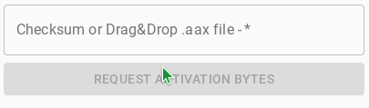
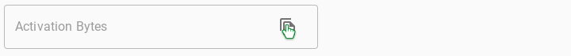

Go to https://www.audible.com/library/titles find the book you want to convert.
Meanwhile go to https://alniles.github.io/audible-mp3/decode/
When the download finishes drag and drop (YOURBOOKNAME.aax) into the box.
Then click on the (REQUEST ACTIVATION BYTES)
Copy the Activation Bytes
Paste it here.
Pick a system you are using.
Go to http://www.ffmpeg.org/download.html Download it for your operating system.
Or
Install brew
/bin/bash -c "$(curl -fsSL https://raw.githubusercontent.com/Homebrew/install/HEAD/install.sh)"Once Brew is installed or if it already is installed.
$ brew install ffmpegGo to your downloads folder in Finder and open it with terminal.
Go to https://www.wikihow.com/Install-FFmpeg-on-Windows For the instructions.
Go to your downloads folder in File Explorer and open it with CMD (command prompt)
Install ffmpeg
sudo apt update && sudo apt upgrade && sudo apt install ffmpeg && sudo apt update && sudo apt upgradeGo to your downloads folder in your terminal or in your files app open it with your terminal.
Pick a system above.
Pick a system above.
Enter an output format! example: '.mp3', '.wav' etc..
Include the dot at the begining.
Split by chapter?
Rename the *.aax file to
input.aaxRename the *.aax file to
Copy this into the terminal or command prompt.
Note: This can take a long time depending on the size of the book!
You can now delete (originalfile.aax)